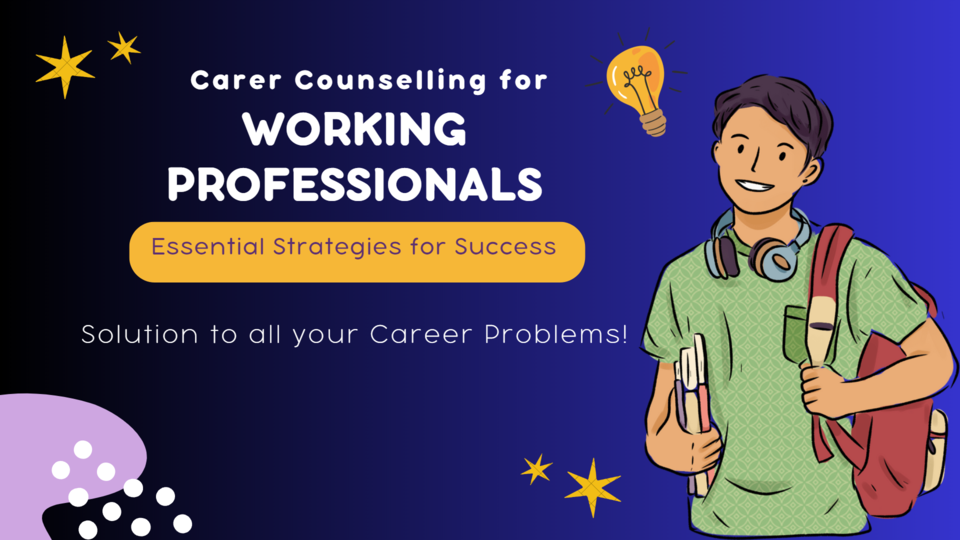

"The one thing that you have that nobody else has is you. Your voice, your mind, your story, your vision. So write and draw and build and play and dance and live as only you can."—Neil Gaiman
Why Do Professionals Need Career Counselling?
Career counselling for working professionals is a whole different thing than that of students. There might be scenarios when a professional is looking for a job change but is confused regarding the next move. Or, they might desire to change their present job and start something innovative or shift to fresh air. These are the primary reasons behind a professional seeking career guidance.
Reasons A Professional Worker Needs Career Counselling
A qualified counsellor helps the working individually with valuable suggestions that help him plan his upcoming endeavour accordingly. Let us take a look at the major reasons a professional working individual will seek career counselling.
1. Exploring Available Career Options-
Seeking career guidance might not always be for a job change. Like, you can also go for the same to know about the further career options lying ahead. Honestly, this is nothing but being safe. After working for a considerable time, you learn a lot and acquire tons of skills. Having a career counselling session with an expert will give you insights on further career prospects which can be a good fit for you, considering the skills and knowledge you have.
2. Job Switching
Now comes another interesting point to discuss. There are examples of an individual joining a company without any interest due to certain unavoidable needs be it monetary, family pressure, or anything significant. Now, there can be two sides to this coin. Either the person will fall for the work he will be doing or he will develop severe disdain towards the job role. In the case of the latter, he might wish to explore other career options or switch to something of their interest and come out of the stressful environment. All these queries can be delicately solved by a career counselling expert.
3. Stress Handling
Career counselling isnt always beneficial to suggest job switches only. You can even reach out to a professional and discuss the hectic hours and stress that are bothering you. Working under tight deadlines, meeting boss expectations, coping up with professional and personal life and every such scenario can contribute to stress enhancement. Seeking professional guidance will help you to deal with such situations accordingly and leave a balanced life.
4. Higher Studies Aspiration
There are many working candidates who aspire to go for higher studies. They want to add another feather to their crown and with the aid of that additional degree, they wish to explore further career opportunities. There can be instances when the individual wishes to opt for higher studies in a different field than the one he has been working for till now. Confusion might arise from such scenarios and the best possible way to sort things out is through career counselling sessions.